12 Muster · Vorschlag fürs Fundament
Jedes Muster läuft flüssig auf Desktop, iPad und Handy, braucht keine Plugins und ist barrierearm (reduzierte Bewegung wird respektiert).
Wir sanieren Straßen, Flughäfen und Industrieflächen so, dass sie Jahrzehnte halten. Leise, sauber, termintreu. Und mit einer Naht, die dicht bleibt.
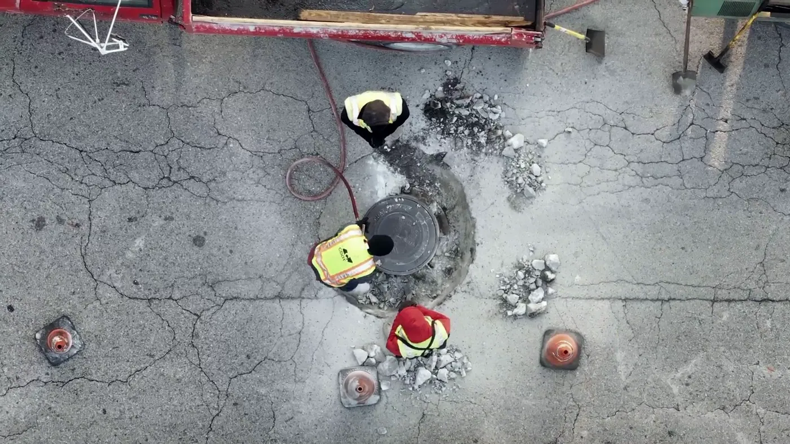
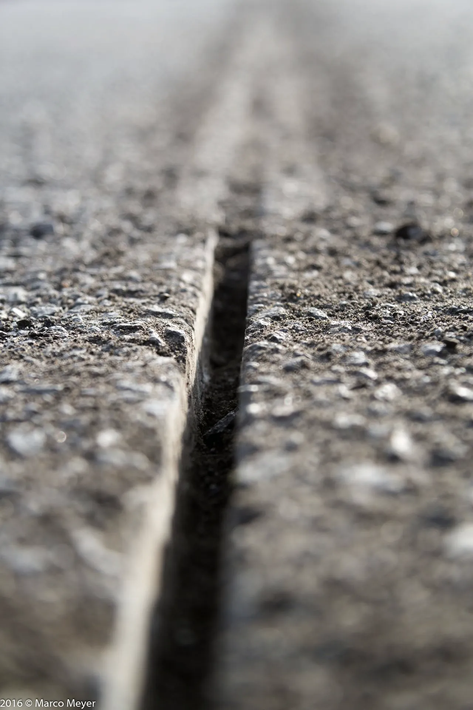
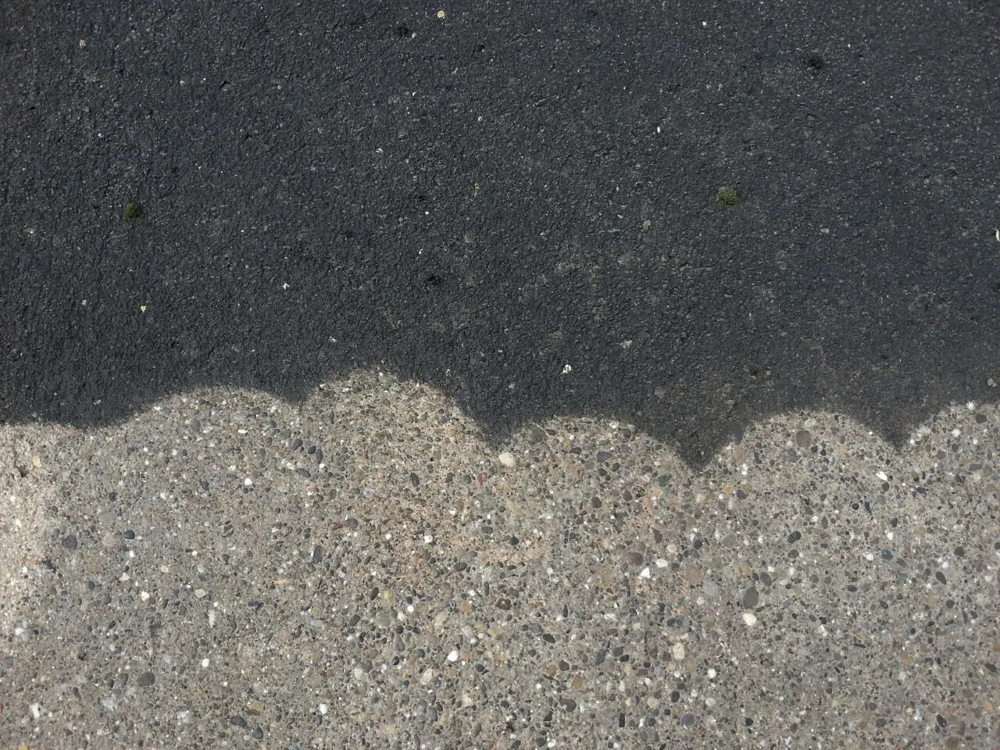
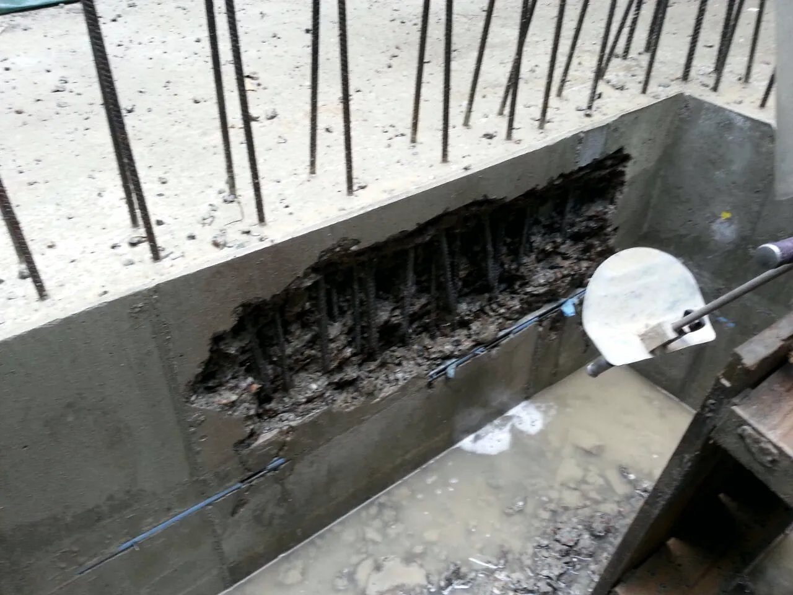
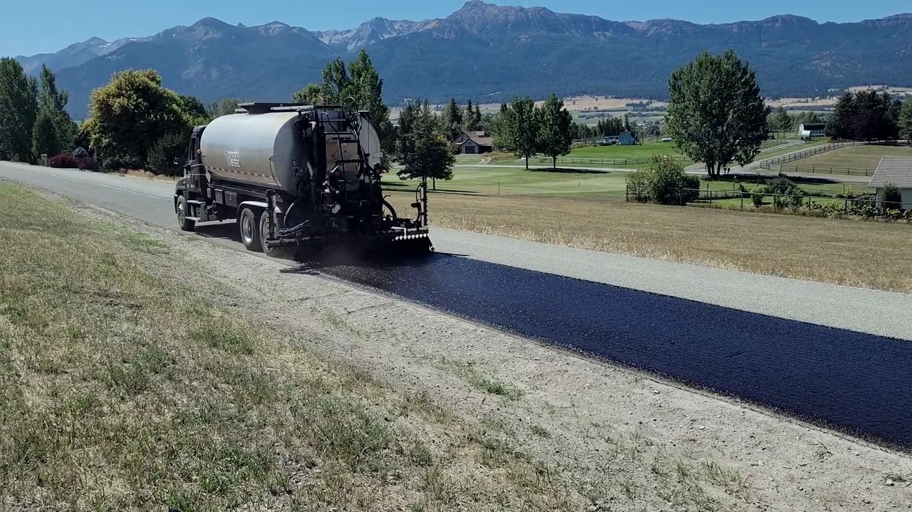
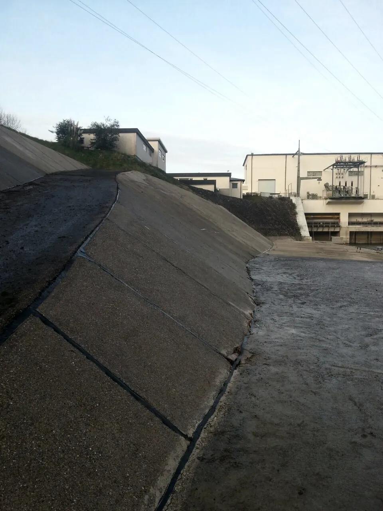
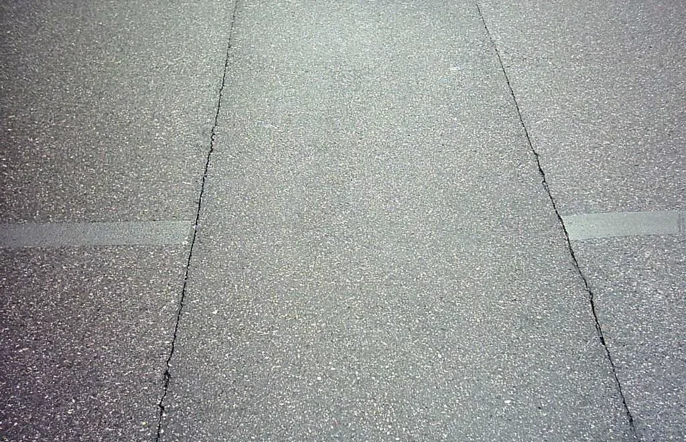
Schadensbild, Belastung, Untergrund.
Saubere Kanten, trockene Fuge.
Heiß, kalt oder nass - je nach Einsatz.
Griffig, dicht, sofort befahrbar.
Rissabdeckung für Kommunen und Landkreise.
Fugen auf Vorfeld und Rollwegen, im Nachtfenster.
AwSV-zertifizierte Abdichtung für Lager und Tankflächen.
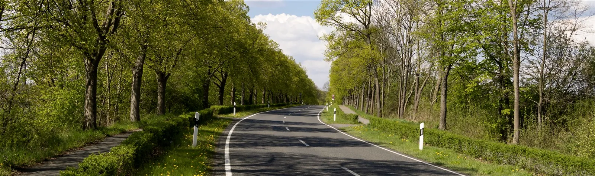
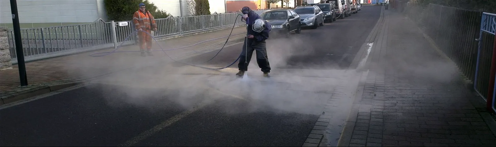
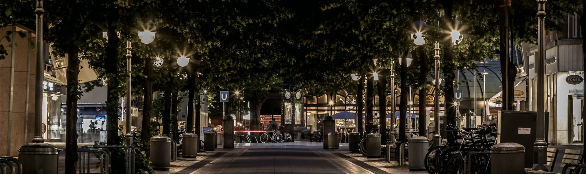
Beispieldaten
Beispielzahlen
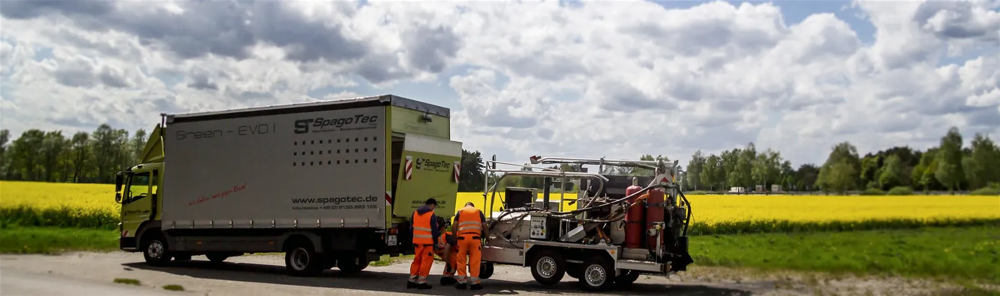
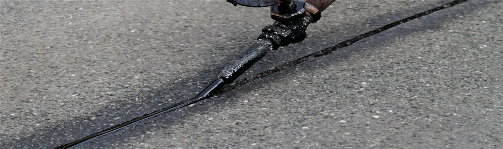